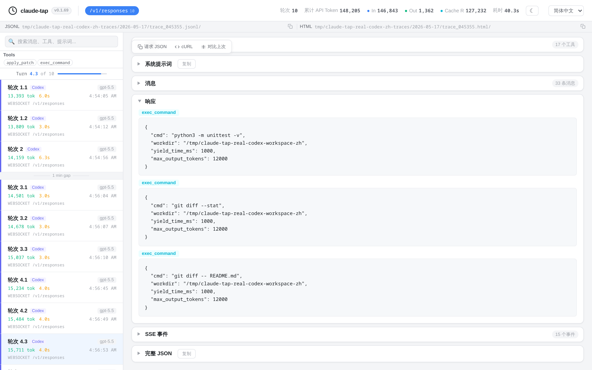

查看完整请求链路
检查 system prompt、对话历史、工具 schema、原始请求体和重建后的响应。
本地 AI Agent Trace Viewer
claude-tap 捕获 AI 编程 Agent 的真实 API 流量，并生成本地 trace viewer。你可以查看 prompt、工具调用、token 用量、延迟、流式响应和请求 diff，不需要把私有 trace 上传到云端 dashboard。
uv tool install claude-tap
claude-tap --tap-client codex
claude-tap export --format html trace.jsonl
Agent 运行受到 prompt、工具 schema、重试、流式 chunk 和模型请求格式影响。claude-tap 把这些内容保留下来，让调试从真实 trace 开始。
检查 system prompt、对话历史、工具 schema、原始请求体和重建后的响应。
通过结构化 diff 看清相邻轮次之间是哪条消息、prompt、工具或参数发生了变化。
导出自包含 HTML viewer，团队成员可以本地打开用于 review、支持或复盘。
用同一个本地 trace viewer 查看 Claude Code traces、Codex traces、OpenAI Responses API traces、Gemini traces 和其他编程 Agent 会话。


先把 trace 留在本地检查；只有需要分享时，再导出静态 HTML artifact。
当你需要理解一个 AI 编程 Agent 到底做了什么，再去调 prompt、比较工具或分享运行记录。